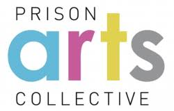

Here are some links for more info on Art in Prison


Most "residents" of prisons have never even tried to paint or sculpt, or work with thier hands in a positve way.
Getiing involved with Art, shows these people they can do more then break the law or be violent, they see they can create something new.
For alot of people this is the first time they have been involved in something constructive and positive.
Seeing that they can do more then they were likely told growing up, leads residents to believe that putting in the energy for something new wont be in vain.
The feeling of accomplishment, for some, can/will lead to finishing school. For some it could be getting a high school diploma or G.E.D. and for anyone that has that already, college becomes the plan.
When incarcerated people take some college classes, they are 43% less likely to be re-incarcerated than those who do not. People in prison who earn an associate's degree are around 85% less likely to return to prison, while those who receive a bachelor's degree are more than 95% less likely. (Google-Apr 12, 2023)
Considering the fact that the last study, wich finshed in 2023, Shows that 82% of People released from prison are rearrested within ten years. Its basic math, or maybe the people in power prefer to continue with mass incarceration...
The following is pulled from the Impact of Art study.pdf, you can check out the entire study by clicking the icon at the top of this page.
Pursuit of Other Educational and Vocational Programs.
Researchers have found a strong correlation between arts education and practice,
and the pursuit of knowledge through other educational and vocational programs.
Arts and the creative process help to develop the "right brain", and to build
confidence and self-esteem, all of which prepares and encourages individuals to
expand their learning in other disciplines. Studies have shown this relationship is
particularly powerful for those who are alienated from the formal education
system--often the case with inmates. As we previously reported, prison arts
programs have served as a gateway to further learning.
Participants were asked if they had enrolled in other educational or vocational
programs. We then controlled for those who had studied or practiced art and those
who hadn't. Table 13 shows that those with previous art experience are more likely
to pursue other educational opportunities either currently (37%) or have pursued
educational opportunities in the past (57%) than those who haven't studied or
practiced art (27% and 30%) respectively. Further, those who pursued educational
opportunities in the past (83%) or currently (78%) are more likely to have had past
art experience than are those who report not having pursued educational
opportunities (28%). These results are statistically significant with a Chi-square =
21.866, df=2, p<,001.